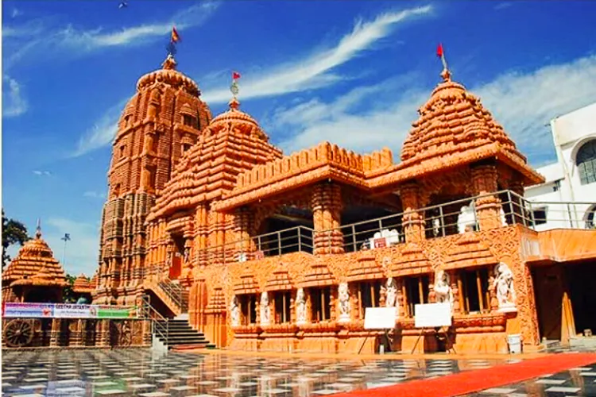 Shri Jagannath Temple, Banjara Hills, Hyderabad

Located in Banjara Hills, this awe-inspiring temple is a fairly modern construction built in 2009. Known to attract thousands of visitors during the Ratha Yatra, this temple can swoop you in its charm on those festive evenings. Adjacent to the main shrine are the temples of Lord Shiva and Hanuman. Go here for a pleasant evening, gawk at the visual art of Ramayana on the wall and be sure to walk out with a packet of prasad (a crispy savoury with a sweet flavour) that’s priced at INR 50.
Timings: 6 am - 12 pm, 5 pm - 10 pm
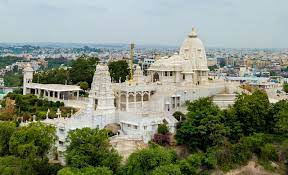 Birla Mandir, Khairatabad, Hyderabad
 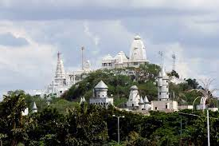
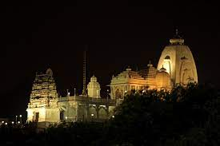
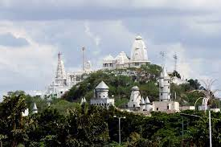
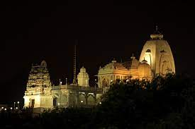
Located in Khairatabad, Birla Mandir is built on a 280-feet high hill, making it visible from many areas of Hyderabad. It is said that the architecture of the temple is a fine blend of Dravidian, Rajasthani, and Utkala style and took almost 10 years to complete the construction. Apart from the main shrine – Lord Venkateshwara – it also has shrines for Lord Shiva, Sai Baba, Hanuman, Lakshmi Devi etc. Do note that mobile phones or cameras aren’t allowed into the temple.
Timings: 7 am - 12 pm, 3 pm - 9 pm
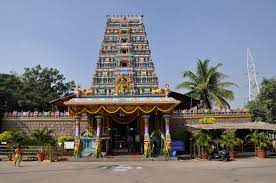 Peddamma Talli Temple, Jubilee Hills, Hyderabad
Located on the main road of Jubilee Hills, this 150-year-old temple attracts devotees every day. It is known for its Bonalu and Bathukamma celebrations which are celebrated with a lot of festivities and fanfare when the whole temple is beautifully decorated and lit up.
Timings: 7 am - 12 pm, 3 pm - 9 pm
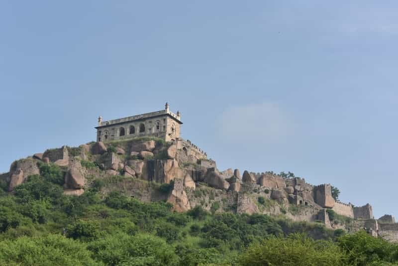 Golconda Fort, Khair Complex, Ibrahim Bagh, Hyderabad, Telangana
 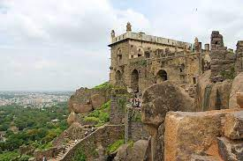
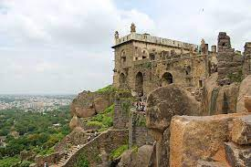
The fort that was completed in the 17th century was the stronghold of the legendary Qutub Shahi Empire. One of the best examples of the acoustic systems of the age, this Hyderabad monument still does not fail to surprise the tourists with its extraordinary architecture and style. Quite the heart of the city’s mercantile activities, the place has forever been known to be a place of trading for the diamond merchants and other traders of gemstones.
Entry Fee: Rs.5 for Indians; Rs. 100 for foreign tourists.
 Charminar, Char Kaman, Ghansi Bazaar, Hyderabad, Telangana
Charminar, Char Kaman, Ghansi Bazaar, Hyderabad, Telangana
 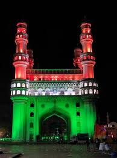
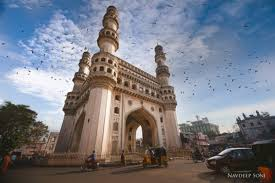
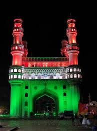
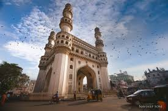
One of the most popular historical monuments in Hyderabad, the Charminar was built by Mohammed Quli Qutub Shah in the year 1951. Made of granite and lime mortar, the structure depicts the indo- Arabian architecture. It is this monument which has come to symbolize the city of Hyderabad. The monument consists of four minarets which stand tall as the examples of the regal antiquity that the place possesses. Now surrounded by shops all around, the Charminar is a famous tourist spot in the city too.
Entry Fee: Rs.5 for Indians; Rs. 100 for foreign tourists.
Falaknuma Palace, Engine Bowli, Fatima Nagar, Falaknuma, Hyderabad
 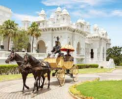
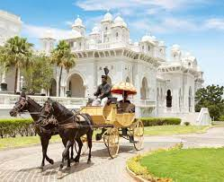
Another gift of the Paigah family to the grand layout the city of Hyderabad, the Falaknuma Palace was built in 1893. This distinguished place was built in the shape of the scorpion with two stings spread out on either side that look quite like wings facing the north. An ideal blend of the Italian and Tudor architecture, this palace is among the rare architectural styles even today. Though built by the Paigah’s this palace was later gifted to the Nizams and now serves to be one of the most expensive hotels in India.
Entry Fee: Nizam Palaces Tour Weekend Half-a-day tour (only Saturday’s and Sunday’s) Tour Option A: Rs.3,100/ Adult and Rs.2480/ Child. (Inclusions: Entry Tickets, Tea & Snacks, A/c Transport, Tour Guide).
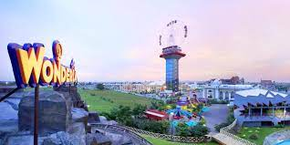 Wonderla, KOuter Ring Road, Exit No 13 Ravirala, Hyderabad, Telangana
 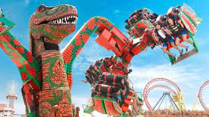
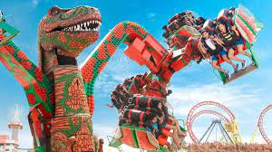
If family fun is on your mind, there can be no better option than Wonderla Amusement Park. One of the most popular family destinations in the city, Wonderla is thrill and fun redefined! The amusement park has a plethora of land rides and water slides on offer to keep you thoroughly engaged for an entire day. The Wave Pool and the Rain Dance sections are among the most popular attractions of the park. The best part is that the park has a number of kids rides specially designed to keep the young brigade happy.
Entry Fee:
- Adults – ₹1016 (Weekdays); ₹1185 (Weekends/Holidays)
- Children – ₹812 (Weekdays); ₹948 (Weekends/Holidays)
- Senior Citizen – ₹762 (Weekdays); ₹889 (Weekends/Holidays)
- Free entry for children below 85 cm in height
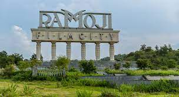 Ramoji Film City, Anaspur Village, Hayathnagar Mandal, Hyderabad, Telangana


For sure, Ramoji Film City is one of the most attractive family destinations in Hyderabad. A one-of-its-kind attraction, it holds the distinction of being the largest studio complex in the world. The film city has been featured in a number of Indian movies. Even the blockbuster movie Bahubali was extensively filmed here. You can explore a number of artificial and natural attractions inside this studio complex which also boasts of an amusement park, two hotels, multi-cuisine restaurants, and various permanent sets. Sprawling over 2000 acres, it is truly a dream destination for everyone, regardless of age, making it among the must-visiting places in Hyderabad.
- Timings: 09:00 am to 05:30 pm; every day
- Things to do: Guided tour of the film sets, Thrill Rides, Live
shows, Bird Park
- Entry Fee: Packages differ. Check their website for details.
 Hussain Sagar, Necklace Roadc, Hyderabad
Hussain Sagar, Necklace Roadc, Hyderabad
Considered to be one of the most romantic spots in the city, Hussain Sagar is a majestic man-made lake designed in the shape of a necklace. The lake offers stunning views of the huge Buddha statue that stands in the middle of the water body. It is an ideal destination to spend some lovely moments with your beloved. To flame your romance further, you can hire a trip on a ferry or a boat and begin exploring the magical views of the surroundings.
- Things to do: Enjoy a boat ride, Lumbini Park, Visit the statue
of Buddha
- Timings: 8:00 AM – 10:00 PM
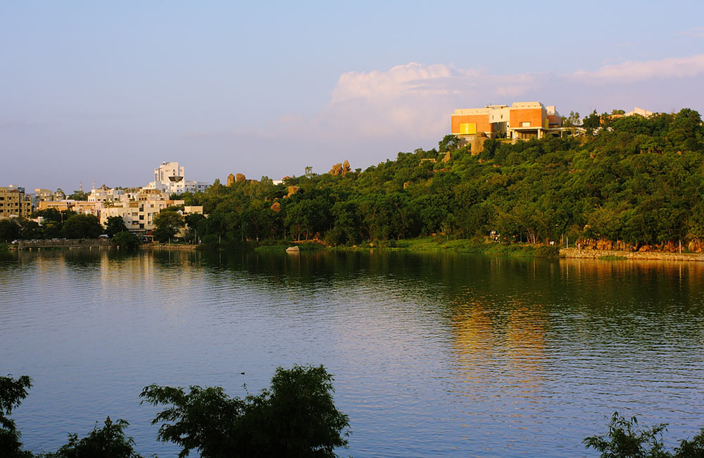 Durgam Cheruvu,CBI Colony, Jubilee Hills, Hyderabad, Telangana
 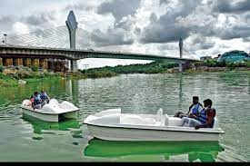
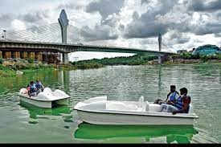
Spending time together can mean different things to different people. If your idea of the same is to sit at a peaceful location and talk to your beloved while looking deep into his/her eyes, Durgam Cheruvu is the perfect destination for you. The beautiful freshwater lake flaunts a well-manicured landscape and is simply perfect for a picnic date. You can also indulge in boating with your partner at this location.
- Entry Fee: Free
- Timings: 10:00 am to 6:30 pm
- Things to do: Boating, Kayaking, Photography, Picnic
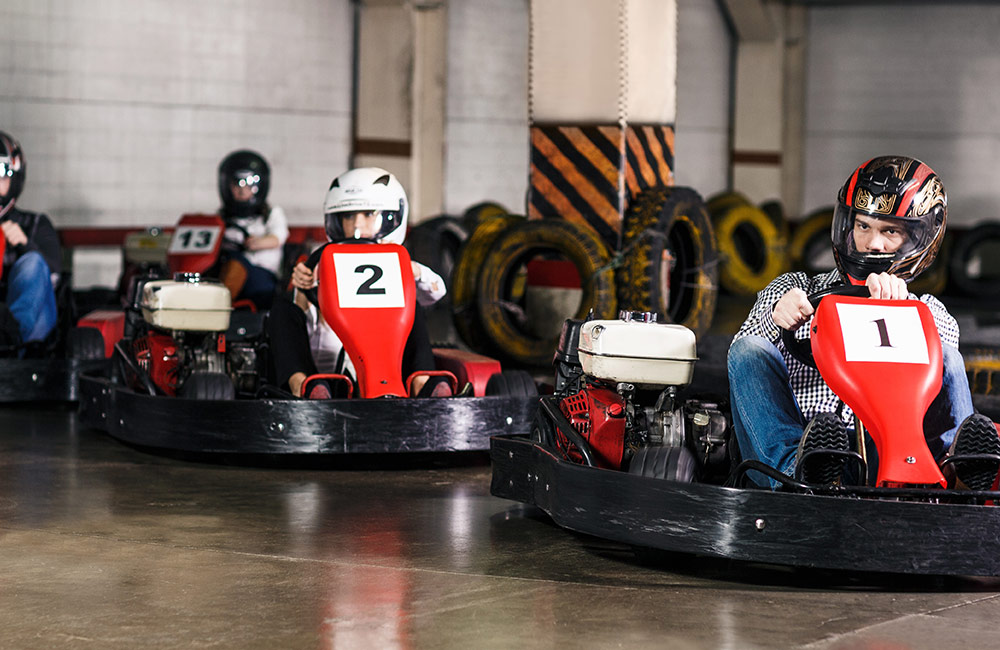 Treasure Island, Next to Golconda Resort, Gandipet, Hyderabad, Telangana
If you love going out for picnics with your friends, why not head out to Treasure Island? True to its name, the place is an island full of treasures as far as fun is concerned. You can engage in a number of activities with your buddies, such as go-karting, camel rides, and water slides and some indoor games as well. To keep you high in the spirits, the place has good options for refreshments. Play, refill your engine, and go back to all the fun and frolicking!
- Timings: 10:30 am to 08:00 am; every day
- Things to do: Go-karting, Camel Rides, Water Slides, Games
- Entry Fee: ₹600 per person
 Birla Planetarium, Near Birla Temple, Ambedkar Colony, Hyderabad
Birla Planetarium, Near Birla Temple, Ambedkar Colony, Hyderabad
The dome-shaped Birla Planetarium is yet another striking Hyderabad tourist places located on Naubat Pahad, right in the heart of the city. Inaugurated by former Andhra Pradesh chief minister N.T. Rama Rao in 1985, this modern planetarium seeks to impart knowledge about heavenly bodies and outer space as well as recent fascinating discoveries. The planetarium is divided into sections that feature exhibits such as archaeological finds, an Antarctica diorama (a 3-D model of the continent), Interactive Science, and many more. One of the most attractive features of this planetarium is the daily Sky Show, which sheds light on comets, meteors, eclipses, and the cosmos as a whole.
- TEntry Fee: ₹120 per person
- Timings: 10:00 am 5:45 pm